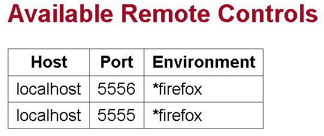

如果你想要在多台機器上，同時啟動多個瀏覽器對Web應用程式作測試，那麼你可以試試 Selenium Grid，
其原理是將一台機器作為Selenium hub，其它台機器對Selenium hub註冊Selenium RC，當你對Selenium
hub發出測試請求時，由Selenium hub對已註冊的其它機器發出請求，由各台機器啟動瀏覽器進行測試，你可以參考Selenium
Grid的 Run the Demo 說明。
以下作個簡單範例，想要使用Selenium Grid，在擔任Selenium hub的機器上，進入已下載解開的Selenium Grid目錄，執行ant指令：
ant launch-hub
啟動成功之後，你可以用瀏覽器連結：
http://localhost:4444/console
這是個簡易控制台，可以看到接下來已註冊的Selenium RC，在擔任Selenium RC的其它台機器上，可以如下執行ant指令：
ant -Dport=<rcPort>
-Dhost=<rcHost>
-DhubURL=http://<hubHost>:4444
-Denvironment="*firefox"
launch-remote-control
例如，假設你的Selenium hub是在ooo.com，而你要註冊的Selenium RC是在xxx.com，RC的port是5555，則可以如下：
ant -Dport=5555
-Dhost=xxx.com
-DhubURL=http://ooo.com:4444
-Denvironment="*firefox"
launch-remote-control
如果你想在本機上同時運行Selenium hub與註冊Selenium RC，則可以省略host、hubURL，指定Selenium RC的埠號即可。例如：
ant -Dport=5555 -Denvironment="*firefox" launch-remote-control
在註冊多個Selenium RC之後，Selenium hub的控制台會看到已註冊的RC：

接著你可以使用ThreadSafeSeleniumSessionStorage來進行測試，以
結合 Selenium RC 中的例子，改用ThreadSafeSeleniumSessionStorage的話，如下所示：
package test.cc.openhome;
import static com.thoughtworks.selenium.
grid.tools.ThreadSafeSeleniumSessionStorage.*;
import static org.junit.Assert.assertTrue;
import org.junit.AfterClass;
import org.junit.BeforeClass;
import org.junit.Test;
public class AddJSPTest {
@BeforeClass
public static void setUpClass() throws Exception {
startSeleniumSession("localhost", 4444,
"*firefox", "http://localhost:8080/BookmarkOnline/");
session().setTimeout("120000");
}
@AfterClass
public static void tearDownClass() throws Exception {
closeSeleniumSession();
}
@Test
public void testAddJSP() throws Exception {
session().open("/BookmarkOnline/add.jsp");
session().click("//input[@value='送出']");
session().waitForPageToLoad("30000");
assertTrue(session().isTextPresent("新增書籤失敗"));
assertTrue(session().isTextPresent("網址不能空白"));
assertTrue(session().isTextPresent("請輸入網頁標題"));
session().type("url", "www.javaworld.com.tw");
session().click("//input[@value='送出']");
session().waitForPageToLoad("30000");
assertTrue(session().isTextPresent("新增書籤失敗"));
assertTrue(session().isTextPresent("請輸入網頁標題"));
session().type("url", "www.javaworld.com.tw");
session().type("title", "JavaWorld@TW");
session().type("category", "程式設計");
session().click("//input[@value='送出']");
session().waitForPageToLoad("30000");
assertTrue(session().isTextPresent("新增書籤成功"));
assertTrue(session().isTextPresent("http://www.javaworld.com.tw"));
assertTrue(session().isTextPresent("JavaWorld@TW"));
assertTrue(session().isTextPresent("程式設計"));
}
}
|